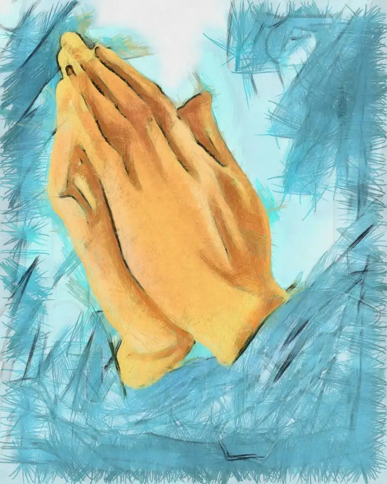

In 1994, I attended a conference led by Catholic apologist Karl Keating. Though it fed us spiritually, lunch was on our own. So, at midday break, a proliferation of hungry Catholics with Rosaries and holy medals gathered at a nearby Hardee’s restaurant.
Among the diners were two women seated across from one another at a small table near a window. I watched as they quietly crossed themselves, and, bowing unobtrusively but purposefully, said grace before their ham sandwiches and curly fries.
I hadn’t grown up saying grace in public, so though the moment quickly passed, this quiet, public witness became etched in my heart, even more deeply than Keating’s inspiring testimony. Their simple gestures, revealing a deep belief in God, made me crave a more uninhibited faith, too.
I learned that day how public prayer can impact those around us for the good. But lately, I’ve been reminded how some misunderstand.
After the Las Vegas shooting massacre, several Facebook friends spoke admonishingly about prayer offerings made in public.
“Jesus didn’t run around talking about how much he was praying or telling people he would pray for them,” one wrote. Another suggested reading Chapter 6 of Matthew’s Gospel, which advises against praying publicly, “like the hypocrites, who love to stand and pray…on street corners so that others may see them.”
These reprimands troubled me for several reasons, including the timing, occurring during the recent 40 Days for Life campaign to end abortion, which emphasizes fasting and prayer on the sidewalks near abortion facilities.
The more I’ve prayed at our state’s only abortion facility, the more powerful I’ve found prayer to be, both public and private.
That initial reproach came from a fellow Christian expressing frustration over having seen so much talk about prayer, and so little about carrying out kind acts.
Though I understood her concern on its face, her indignance seemed misplaced. I also recognized my life in her words, since I’m one to commonly ask for and offer prayers, both on social media and in person.
I offered that prayer itself can be an act of compassion, and mentioned our sidewalk ministry. Another commenter, questioning my motives, suggested that rather than pray for the women, I ease their anxiety by accompanying them to the abortion-facility door.
I shuddered at what seemed to me – even if unintended – a sinister proposition. “Never!” I said aloud to myself.
Prayer has become a vital weapon to me in facing Wednesdays on the sidewalk. Over time, I’ve prayed more often, and more intently, before, during and after my time there.
I end my Wednesdays at Adoration, where I heap more prayers on top of those already spoken, recalling the faces of each scared woman I’ve seen, and thanking God whenever there is a “save.”
Sometimes, my prayers begin the day prior as I think of the women, already mothers forever, contemplating parting with their children, with no hope of earthly reunion.
So, the suggestion that prayer be eliminated from this public ministry left me cold.
To be clear, we pray on the sidewalk not so others will notice, but to cover the sidewalk in God’s grace, which we desperately need. We’re calling on the most high and holy God for heavenly help
In moments my attention goes from Rosary beads to the women approaching, to offer live-saving literature, and, yes, prayers, I’m comforted by the petitions continuing to flow behind me from others.
The more purposefully I’ve turned to prayer concerning the sidewalk, the more resolved, courageous and peaceful I’ve become. I can only attribute my increased indifference regarding the mocking from the escorts to this “public prayer,” which we offer for them as well.
“What is most important about intercession,” writes Father Jacques Philippe, “is not always its material object, but rather the connection with God established and developed by means of it. That connection will always bear fruit, both for ourselves and for the people for whom we pray.”
Rather than discouraging one another from prayer, private or public, we need to encourage more of it.
Ephesians 6:12 reminds us that “our struggle is not against flesh and blood,” but against the rulers, authorities, and powers of this dark world, “and the spiritual forces of evil in the heavenly realms.”
Recently, the Reverend Jayson Miller led a group from our parish in a Fatima Rosary on the sidewalk. As we recited Hail Marys, music from the beer joint next door blared. And I couldn’t help but feel, as words from “Dirty Deeds” mingled with our petitions, that our public prayer witness is needed more than ever. As we continued praying, firmly, calmly, without reservation, I felt God’s victory near.
[Note: I’ve been writing about my experiences on the sidewalk Downtown Fargo on Wednesday, the day abortions happen at our state’s only abortion facility, for a year now for New Earth magazine — the official news publication of the Fargo Diocese. I think these stories are worth repeating, so I’ll begin doing so here after original publication, including playing catch-up with the 11 I wrote in 2017. I hope you find “Sidewalk Stories” helpful in understanding the truth about abortion and how it plays out tragically each week here in Fargo, N.D. The preceding ran in New Earth’s Nov. 2017 issue.]